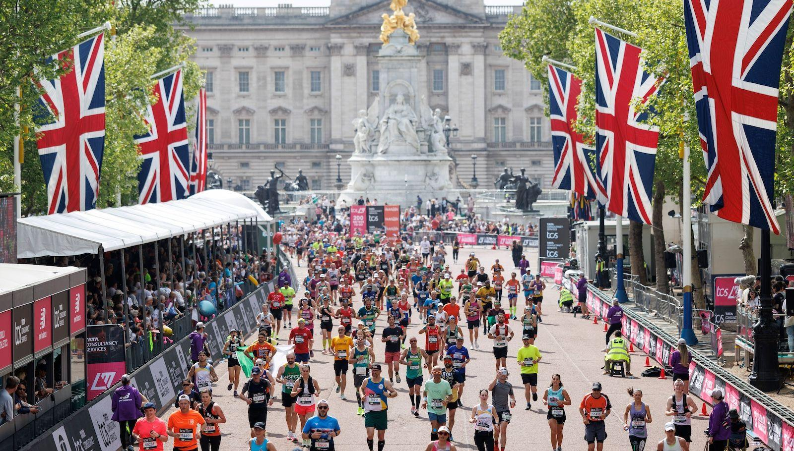
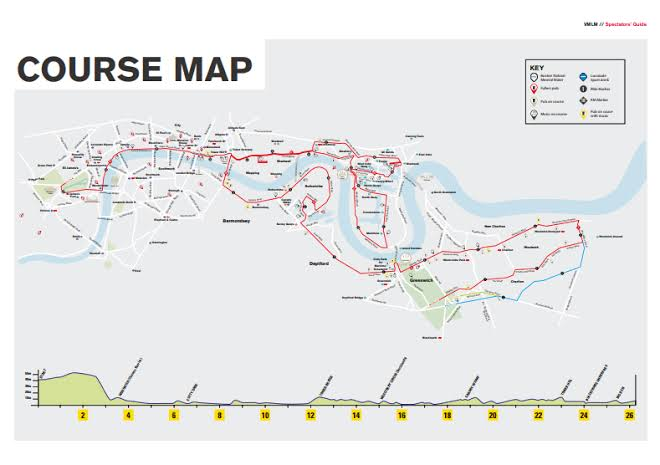
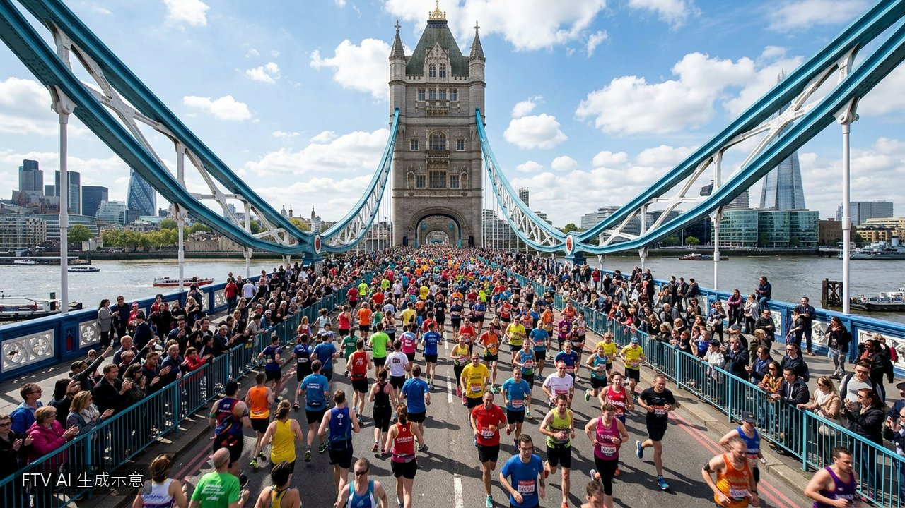

英國倫敦馬拉松 (TCS London Marathon)
世界馬拉松大滿貫 (WMM) 核心成員 ｜ 全球規模最大的單日慈善嘉年華
創辦於 1981 年，由奧運獎牌得主 Chris Brasher 與 John Disley 受到紐約馬拉松啟發而創立。逾 5 萬名跑者從格林威治出發，穿越倫敦塔橋直奔白金漢宮，全城百萬群眾狂熱應援，累積善款突破 14 億英鎊。
• 古典航海與金融穿越：卡蒂薩克帆船、倫敦塔橋、金絲雀碼頭摩天樓與大笨鐘。
• 全球最高中籤窄門：抽籤登記突破 130 萬人，公眾抽籤中籤率僅約 1% 至 3%。
• 白金漢宮尊榮衝線：最後繞經聖詹姆斯公園，在馬爾大道（The Mall）接受全城英雄式致敬。

賽事基本資訊與核心規格
平緩低伏地勢與三色分流起跑，兼具頂級競賽秩序與極度親民包容度
• 舉辦月份：每年 4 月最後一個週日。
• 關門限時：約 7 小時（寬鬆）。
• 參賽規模：逾 50,000 名跑者。
• 累計爬升：約 85 公尺。
• 累計下降：約 125 公尺。
• 地形趨勢：起伏極小之沿河景觀平路。
• 路面屬性：平整市區公路與古老橋面。
• 難度分級：初級（新手友善）。
• 完賽率：歷年常態高達 96% 以上。
• 標籤認證：世界田總白金標籤。
• 聯盟體系：Abbott WMM 六大滿貫。
• 資格採納：成績為波士頓 BQ 正式資格賽。
賽道結構與關鍵魔王路段剖析
格林威治三色分流起步，穿越泰晤士河核心，防範隧道微爬坡伏擊
• 0-4.5km（格林威治分流）：紅、綠、藍三色分區起跑，隨後在伍利奇平穩匯流。
• 4.5-21.1km（古蹟與塔橋）：繞行卡蒂薩克號，在半程登上雄偉倫敦塔橋，聲浪達最高峰。
• 21.1-32km（摩天狗島）：穿梭金絲雀碼頭高樓群，多直角彎道，注意 GPS 漂移。
• 35-42.195km（國會衝刺）：彩虹賽道、維多利亞堤岸、大笨鐘，繞過白金漢宮衝線。
• 痛點剖析：第 24 英里穿越黑衣修士地下道，隧道內光線昏暗且無觀眾歡呼。出隧道時面臨 2.5% 短爬升，在雙腿累積 38 公里疲勞時體感極陡。
• 通關策略：隧道內專注步頻切勿失神，出坡縮小步幅，一出隧道即可迎接維多利亞堤岸數萬人加油聲浪。

報名管道與搶票四大途徑
超過百萬人登記的終極窄門：掌握一般抽籤、慈善募款與旅行社保額全攻略
• 登記時程：賽事結束當週開放免費線上登記。
• 錄取率：全球競爭激烈，中籤率約 1%~3%。
• 結果通知：約每年 6 月至 7 月放榜。
• 報名成本：標準海外跑者報名費。
• 核心主流：過半跑者皆透過慈善合作機構參賽。
• 募款門檻：承諾募得 £2,000 至 £3,000（約台幣 8-12 萬）。
• 成功機率：確定性最高，機構審核計畫後保證名額。
• 保障彈性：遇傷病大多允許保留順延。
• 合作模式：授權海外國際運動旅行社販售。
• 套裝內容：保證名額 ＋ 倫敦精選星級飯店 ＋ 專車接駁。
• 優勢：免去募款壓力與搶票焦慮。
• 適合跑者：追求百分之百安心出賽者。
• Good for Age：嚴格依年齡性別分級達標。
• 限制條款：速度達標管道目前僅限英國居民。
• 錦標賽組：英格蘭田總頂尖菁英跑者專屬。
• 跑團分配：英國在地跑步協會內部抽籤名額。
交通後勤、住宿選址與 Expo 領物
起點格林威治至終點白金漢宮之分離動線，完善規劃賽日大眾運輸
• 起點交通：格林威治公園/黑荒原（搭乘鐵路至 Blackheath、Greenwich 或 Maze Hill 站，選手當日憑號碼布免費搭乘）。
• 終點位置：白金漢宮前馬爾大道，散場步行至查令十字或西敏地鐵站。
• 兩地分離：起終點橫跨泰晤士河兩端，賽前必須將所有乾淨衣物裝入大會寄物車。
• 首選 A 區（維多利亞 Victoria / 滑鐵盧 Waterloo）：距離終點馬爾大道步行可達，完賽後可秒回飯店休息。
• 首選 B 區（倫敦橋 London Bridge）：搭乘火車前往起點格林威治僅需 15 分鐘，交通樞紐最便利。
• 防坑提醒：避免住在東南遠郊起點附近，否則完賽後跨越管制市區回飯店極為疲憊。
• 博覽會地點：倫敦碼頭區 ExCeL London 展覽中心。
• 交通方式：搭乘伊麗莎白線（Elizabeth line）或 DLR 輕軌至 Custom House 站。
• 領物規範：需本人攜帶附照片身分證件與官方確認二維碼領取號碼布與晶片。
• 周邊豐富：各大贊助品牌限量周邊與賽道紀念商品雲集。
氣候數據、補給戰術與自備能量膠
春季英倫多變天候應對，大會官方瓶裝水站與自備膠條戰術佈局
• 氣溫區間：8°C 至 15°C（偶爾偏涼或降雨）。
• 降雨機率：春季倫敦天氣多變，陣雨機率約 30% 至 40%。
• 風向特點：泰晤士河開闊段偶有陣風，市區兩側建築物防風良好。
• 起跑體感：清晨黑荒原草地濕冷，起跑等待務必穿著雨衣防潮。
• 跑鞋首選：柏油公路為主，平坦路面適合厚底碳板競速鞋。
• 特殊路段防滑：倫敦塔橋木質接縫處與雨天路段需注意鞋底濕地抓地力。
• 變裝文化：大會是健力士世界紀錄變裝認證殿堂，奇裝異服需提前實測排汗防磨。
• 防摩擦膏：腋下與胸前塗抹凡士林，防止長距離摩擦疼痛。
• 獨特瓶裝水站：每 5km 提供 250ml 運動瓶蓋瓶裝水，便於手持飲用，並設回收桶。
• 能量膠警告：官方能量膠站全線僅設於第 13 英里與第 18 英里兩處！
• 自備戰術：跑者務必全程自備 4 至 5 條習慣之能量膠，每 45 分鐘固定補給。
• 電解質補給：官方運動飲料站數量有限，建議隨身攜帶鹽錠。
賽後文化巡禮與系列下一站
戴上厚實的獎牌，在英式小酒館暢飲啤酒慶功，並前往古文明之都羅馬
• 英式傳統 Pub 慶功：掛上獎牌前往考芬園或蘇活區傳統小酒館，大啖經典炸魚薯條（Fish & Chips）與英式麥酒（Ale）。
• 西敏寺與大笨鐘排酸漫步：沿著泰晤士河南岸漫步，仰望大笨鐘與倫敦眼，回味昨日歡騰衝線。
• 博羅市場（Borough Market）美食：賽後隔天前往百年市集品嘗熱生蠔與肉餡派，動態慢走放鬆四頭肌。
